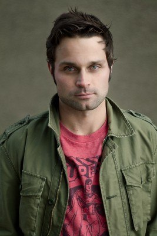

#9916 Angst hat viele Gesichter
Alternativ: The Tall Man

 IMDB-Wertung: 5.9 / 10
IMDB-Wertung: 5.9 / 10  Metascore: 52
Metascore: 52 
In einer einsamen Bergbaustadt ist das Leben nicht aufregend, besonders wenn auch die Wirtschaftskrise nicht an der Stadtgrenze Halt macht und die Gemeinde somit schleichenden Schrittes zu Grunde geht. Doch dann passieren merkwürdige Dinge und die Bevölkerung wird in helle Aufregung versetzt, als plötzlich nach und nach die Kinder der Stadt verschwinden. Es hält sich das Gerücht unter den Einwohnern, dass die Kleinen von einem unheimlichen Wesen entführt wurden, welche sie nur den „Tall Man“ nennen. Julia Denning steht der Sache jedoch skeptisch gegenüber und mag nicht an übernatürliche Wesen oder dergleichen glauben. Doch auf einmal ist auch sie selbst betroffen, als ihr kleiner Sohn David eines Nachts spurlos verschwindet. Die Krankenschwester ist völlig fassungslos, setzt aber alles daran ihr Kind zu befreien. Und durchlebt dabei den schlimmsten Albtraum, den man sich nur vorstellen kann...
Jahr: 2012
Dauer: 105 Minuten
FSK: 16
Land: USA Studio: Image EntertainmentTonspuren: DTS - ,
Untertitel: Deutsch,
Auflösung: 1080p (1920x800) Größe: 5027 MB
Genre: Thriller, Horror, Drama, Krimi, Mystery
Regisseur: Pascal Laugier
Drehbuch: Pascal Laugier
Soundtrack: Todd Bryanton
Darsteller:
- Jessica Biel als Julia Denning
 Jodelle Ferland als Jenny
Jodelle Ferland als Jenny Stephen McHattie als Lieutenant Dodd
Stephen McHattie als Lieutenant Dodd- William B. Davis als Sheriff Chestnut
- Samantha Ferris als Tracy
 Colleen Wheeler als Mrs. Johnson
Colleen Wheeler als Mrs. Johnson- Eve Harlow als Christine
- Janet Wright als Trish
 John Mann als Douglas
John Mann als Douglas Teach Grant als Steven
Teach Grant als Steven- Garwin Sanford als Robert
- Jakob Davies als David
- Katherine Ramdeen als Carol
-  G. Michael Gray als Young Father #2
- Kevin DeWalt als Prison Guard #2
- Ricardo Hubbs als Tall Cook
- Rene Mousseux als Silhouette
- Jodi Sadowsky als David's New Mother
- Ferne Downey als Lady / Mrs. Parker Leigh
- Lucas Myers als Deputy Campbell
- Pat Henman als Nurse at police Infirmary
- Alicia Gray als Young Mother #3
- Georgia Swedish als Mrs. Ashcroft
- Jenna Gatschene als Waitress at Diner
- Priya Lily Campbell als Tiffany
- John Ryan als Prison Guard
- Melissa Gibson als Female Guard
- Melissa Patenaude als Inmate #1
- Michele Mungall als Inmate #2
- Jacqueline Eggie als Inmate #3
- Angela Stott als Inmate #4
- Josh Strait als Anonymous Voice #1
- Dawn Bird als Maid
- Francisco de Borja De la Bella als FBI Agent (uncredited)
- Derek J. Finnik als FBI Agent (uncredited)
- Louis Thevenon als Man at the Diner (uncredited)
Datei: X:\2012(A-F)\Angst hat viele Gesichter (2012, FSK16, 1920x800).mkv seit 08.11.2018
Festplatte: HD 2012(A-M)
 Es gibt insgesamt 102 Filme in der Gruppe '2012(A-F)'
Es gibt insgesamt 102 Filme in der Gruppe '2012(A-F)'